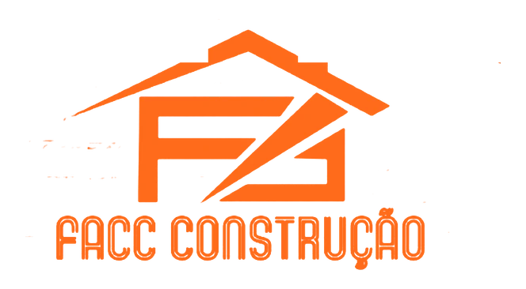

Eu tinha medo de cair em pedreiro que pega o dinheiro e some. A FACC mostrou obras feitas, equipe própria e me passou segurança desde a primeira conversa. Hoje minha casa está pronta, no prazo combinado.


FACC Construção · Guará / BrasíliaCuidamos da execução da sua obra para você construir, reformar ou sair do aluguel com mais segurança, evitando dor de cabeça com abandono, atraso e mão de obra sem responsabilidade.
Equipe própria, sem terceirizar a sua obra para mão de obra informal.
A FACC trabalha com equipe contratada e gerida diretamente pela construtora, com mais controle no canteiro, mais responsabilidade na execução e menos risco de obra abandonada no meio do caminho.
Casas térreas executadas em até 120 dias, conforme escopo e condições da obra.
Duas décadas de experiência permitem ritmo de execução sem comprometer qualidade. Cronograma alinhado, equipe organizada e responsabilidade real com o prazo combinado.
Da escolha do terreno ao projeto e à execução da obra do jeito que você quer.
Mais do que executar, a FACC orienta. Se você precisa de terreno, projeto ou ainda está estruturando os próximos passos da obra, a equipe ajuda a definir o melhor caminho.
Você não precisa correr atrás de material. A FACC organiza e fornece tudo.
Trabalhamos com obra completa: o cliente não precisa comprar, transportar ou levar material para o canteiro. A FACC compra, organiza e entrega tudo o que a sua obra precisa, do início ao fim.
A FACC Construção, conduzida por Francisco, atua há duas décadas no mercado da construção civil em Brasília. Mais de 150 casas realizadas e uma base sólida de clientes que cresce, principalmente, por indicação.
O foco da FACC é claro: entregar obras com equipe própria, agilidade na execução e responsabilidade do início ao fim. A construtora atua tanto na construção do zero, que é a maior parte das obras realizadas, quanto em reformas residenciais de médio e alto valor.
Quem contrata a FACC procura mais do que preço. Procura uma empresa estruturada, que conduz o canteiro com método, que tem histórico para mostrar e que assume o compromisso de não largar a obra pelo caminho.
Construções do zero e reformas executadas pela equipe própria da FACC em Brasília. Cada projeto foi conduzido do canteiro à entrega, com acompanhamento direto.
Eu tinha medo de cair em pedreiro que pega o dinheiro e some. A FACC mostrou obras feitas, equipe própria e me passou segurança desde a primeira conversa. Hoje minha casa está pronta, no prazo combinado.
Saímos do aluguel depois de comprar um terreno e construir com a FACC. O Francisco entendeu o que a gente queria, conduziu o projeto com calma e a obra andou no ritmo combinado. Recomendamos para várias famílias da nossa comunidade.

Comprei uma casa antiga para transformar e a FACC executou a reforma inteira. Equipe organizada, sem aquela bagunça de obra que assusta. Acabamento de respeito, marmoraria e parte elétrica feitas com critério.

Sou médica e investi em um imóvel para revenda. Procurei várias construtoras e fechei com a FACC pelo histórico. O Francisco mostra obras feitas, fala com clareza sobre prazo e não tenta empurrar venda. Foi a melhor decisão.

Eu estava decidindo entre comprar pronto ou construir e a FACC sentou comigo para entender meu cenário sem pressão de venda. Acabamos optando pela construção e a obra andou conforme combinado. Hoje moro na minha casa.

A obra mais barata que recebi foi de um pedreiro informal, e o engenheiro de outra obra perto da minha estava com a casa parada há meses por isso. Fechei com a FACC pelo conjunto: equipe, histórico e segurança. Não me arrependo.

Um caminho consultivo e direto, pensado para quem quer construir ou reformar com mais segurança.
Você preenche o formulário e nossa equipe entende o tipo de obra, localização e momento do projeto.
Avaliamos se você já tem terreno, projeto e em que momento está a obra para indicar os melhores próximos passos.
Com base no seu momento, orientamos os próximos passos para construção, reforma ou estruturação do projeto.
Após o alinhamento, a obra é conduzida com equipe própria, responsabilidade e acompanhamento até a entrega.
As perguntas que mais ouvimos de quem está prestes a iniciar uma construção ou reforma.
Sim. A FACC executa construções do zero (a maior parte das obras realizadas) e também reformas residenciais de médio e alto valor. Nossa especialidade é resolver a obra do início ao fim, com equipe própria.
Equipe própria. A FACC não atua como pedreiro informal e não terceiriza a obra para mão de obra sem vínculo. Isso aumenta o controle no canteiro, a responsabilidade na execução e a previsibilidade de prazo.
Sim. A FACC apoia o cliente desde a busca por terreno e desenvolvimento do projeto até a execução. Se você ainda está estruturando os próximos passos, a equipe orienta o caminho mais coerente para o seu momento.
Atuamos no Guará, Brasília e regiões próximas. A nossa base de clientes é forte no Guará, incluindo a comunidade chinesa local, e na rede de profissionais liberais (dentistas, médicos, investidores) da capital.
Preencha o formulário e fale com a FACC Construção. Nossa equipe faz uma pré-análise do seu cenário e te chama no WhatsApp para entender o melhor caminho para a sua obra, seja construção ou reforma.